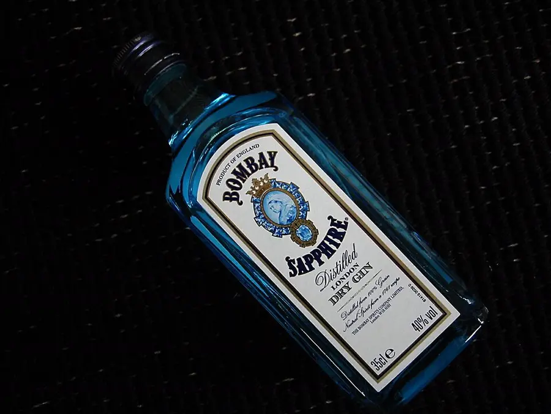

대표 로고대표 브랜드 마크
대표 로고대표 브랜드 마크봄베이 사파이어 Bombay Sapphire
봄베이 사파이어(Bombay Sapphire)는 Bacardi의 자회사 Bombay Spirits Company가 영국 햄프셔주 라버스톡의 Laverstoke Mill에서 증류하는, 식물 재료로 향을 입힌 런던 드라이 진 브랜드이다.
최종 업데이트
봄베이 사파이어는 어떤 브랜드인가
봄베이 사파이어는 열 가지 식물 재료로 향을 내는 런던 드라이 진이다. 아몬드, 레몬 껍질, 감초, 주니퍼 베리, 오리스 뿌리, 안젤리카, 고수, 카시아, 쿠베브, 그레인 오브 파라다이스가 향의 원료이다.
다른 공급업체에서 들여온 알코올을 카터헤드 증류기로 세 번 증발시키고, 그 증기를 식물 재료가 담긴 망에 통과시켜 맛과 향을 얻는다. 이 방식은 구리 단식 증류기로 만든 진보다 가볍고 꽃향이 강한 맛을 낸다고 여겨진다.
여기에 웨일스 포이스의 저수지 Lake Vyrnwy의 물을 더해 영국 등지에서 판매하는 제품의 도수를 40.0%로 맞춘다. 병은 옆면이 평평한 사파이어색이며 라벨에 빅토리아 여왕의 그림이 있고, 현재 Bacardi가 소유한 브랜드이다.
봄베이 사파이어는 어떻게 시작되고 성장했나
이 브랜드는 1986년 영국의 와인 상인 International Distillers & Vintners가 처음 출시했다. 1997년 Diageo가 브랜드를 Bacardi에 매각했다.
이름은 영국령 인도 시기에 Royal Indian Armed Forces가 대중화한 진토닉에서 유래한다. "Bombay"는 인도의 도시 뭄바이의 옛 이름을, "Sapphire"는 영국령 실론(스리랑카)에서 채굴된 보랏빛 푸른 보석 Star of Bombay를 가리킨다.
이 보석은 현재 Smithsonian Institution에 전시되어 있다.
봄베이 사파이어의 브랜드 아이덴티티는 무엇인가
카터헤드 증류기의 증기 침출 방식과 열 가지 식물 재료, 사파이어색 병과 빅토리아 여왕 라벨로 알려진 런던 드라이 진이다.
봄베이 사파이어의 대표 제품과 서비스는 무엇인가
Bacardi는 식물 재료를 여덟 가지 쓰는 Bombay Original London Dry Gin도 판매한다. 2011년 9월에는 레몬그라스와 검은 후추를 더한 Bombay Sapphire East를 뉴욕과 라스베이거스 시험 시장에서 내놓았으며, 42%로 병입했다.
2015년에는 영국 시장용 특별판 Star of Bombay를 47.5%로 만들었고, 베르가못과 암브레트 씨앗을 넣었다. Bombay Bramble은 블랙베리와 라즈베리를 우려 37.5% ABV로 병입한 제품이다.
2019년 여름에는 페니로열 민트, 로즈힙, 헤이즐넛을 더한 한정판 Bombay Sapphire English Estate를 41%로 선보였다.
봄베이 사파이어는 지금 어떤 상태인가
2013년까지 Bacardi는 생산과 병입을 영국 체셔 워링턴의 G&J Greenall에 위탁했다. 2011년 제조 과정을 햄프셔 라버스톡의 새 시설로 옮기는 계획이 발표되었고, 2012년 2월 건축 허가를 받아 2014년 가을 방문자 센터가 문을 열었다.
이 센터에는 Thomas Heatherwick의 구조물인 온실 두 동이 있다. 이전 뒤에도 병입은 G&J Greenall이 맡았으나 이후 스코틀랜드 글래스고로 옮겨졌다.
봄베이 사파이어 로고는 어떻게 변해왔나
대표 로고대표 브랜드 마크사진으로 보는 봄베이 사파이어의 역사

자주 묻는 질문
봄베이 사파이어는 언제 설립되었나요?
봄베이 사파이어는 1987년 설립되었습니다.
봄베이 사파이어는 어떤 산업의 브랜드인가요?
봄베이 사파이어는 식음료 분야의 브랜드입니다.
봄베이 사파이어의 브랜드 아이덴티티는 무엇인가요?
카터헤드 증류기의 증기 침출 방식과 열 가지 식물 재료, 사파이어색 병과 빅토리아 여왕 라벨로 알려진 런던 드라이 진이다.
봄베이 사파이어의 대표 제품은 무엇인가요?
Bacardi는 식물 재료를 여덟 가지 쓰는 Bombay Original London Dry Gin도 판매한다.
봄베이 사파이어는 현재 어떤 상태인가요?
2013년까지 Bacardi는 생산과 병입을 영국 체셔 워링턴의 G&J Greenall에 위탁했다.
봄베이 사파이어의 공식 웹사이트는 어디인가요?
봄베이 사파이어의 공식 웹사이트는 https://www.bombaysapphire.com/ 입니다.
출처와 검증
봄베이 사파이어 관련 참고: 공식 웹사이트 · 위키데이터 Q891834 · 한국어 위키백과 · 영어 위키백과. 브랜드명은 한글과 원어를 함께 표기하되 데이터에 없는 표기는 만들지 않습니다. 기원 국가·설립연도는 검수된 정의문에서 확인된 값을 우선하고, 없을 때만 공식 웹사이트 URL이 일치하는 위키데이터 개체의 값을 씁니다. 웹 첫 보관은 인터넷 아카이브가 공식 사이트 첫 화면을 처음 보관한 날로, 사이트 개설일과 다를 수 있습니다. 위키데이터 값은 2026-11-07 기준입니다.